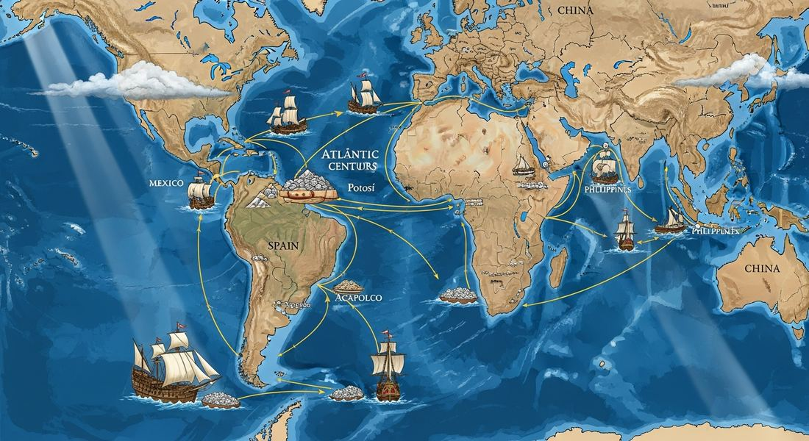

4.5 Maritime Empires Maintained and Developed
- LO-A: Mercantilism — The dominant economic theory of European maritime empires: the goal of economic policy was to accumulate wealth (especially gold and silver) by maximizing exports and minimizing imports. Colonies existed to provide raw materials and markets for the mother country, not to develop their own economies. Mercantilist policies drove the establishment of trade monopolies, navigation acts, and the chartered companies that managed colonial trade. Joint-stock companies —: The organizational innovation that made global trade manageable: companies like the Dutch VOC (East India Company, est. 1602) and the English EIC (est. 1600) were financed by selling shares to investors, spreading the risk of individual voyages across many shareholders. This allowed the enormous capital required for transoceanic trade to be assembled without any single investor bearing catastrophic risk. Joint-stock companies could also negotiate treaties, maintain armies, and govern territories — blurring the line between corporation and state.
- LO-B: Explain continuities and changes in networks of exchange… — Silver and global trade —: The primary currency connecting the Atlantic and Asian economies was silver from the Spanish mines of Potosí (Bolivia) and Zacatecas (Mexico). Spanish silver flowed in two directions: east to Europe, and then on to Asia to pay for Chinese silk, Indian cotton, and Southeast Asian spices. China had a particularly insatiable demand for silver (used to pay taxes), which meant that much of the world's Atlantic silver eventually wound up in China — connecting American mines to Chinese markets through Atlantic and Indian Ocean trade networks.
- LO-C: Explain how political, economic, and cultural factors affected… — Cultural mixing in the Atlantic world —: The Atlantic trading system brought together African, American, and European peoples in ways that produced new hybrid cultures. Syncretic religious practices (Vodou, Candomblé) blended African religious traditions with Catholic Christianity. New cuisines emerged blending African, indigenous, and European foods. Languages mixed (Haitian Creole, Brazilian Portuguese with African and indigenous elements). It's worth noting that all parties — African, American, and European — contributed to this cultural synthesis, though they did not participate equally or voluntarily.
Try each question before revealing the answer.
1. Mercantilist theory held that the world's total wealth was fixed — meaning one country could only get richer if another got poorer. How does this assumption shape colonial policy differently than modern free-trade theory?
2. Why was Chinese demand for silver so important for connecting the Atlantic and Asian economies in the period 1450–1750?
3. The Dutch East India Company (VOC) had its own army, navy, and the power to sign treaties on behalf of the Dutch Republic. Why did states give commercial companies state-like powers, and what problems might this create?
4. Vodou (in Haiti) combines African religious practices (from West African Vodun traditions) with Catholic saints and rituals. Why would enslaved Africans develop a syncretic religion rather than simply maintaining their traditional practices unchanged?
5. It's worth noting that peasant and artisan labor "continued and intensified" in many regions as global demand for food and consumer goods increased. Why would global trade expansion intensify domestic labor demands even for people who never participated in long-distance trade directly?
- Explain how rulers employed economic strategies to consolidate and maintain power from 1450 to 1750
- Explain continuities and changes in networks of exchange from 1450 to 1750
- Explain how political, economic, and cultural factors affected society from 1450 to 1750
Tap a term for its definition.
-
Definition: An economic theory holding that national wealth was best built by maximizing exports and minimizing imports, accumulating bullion (gold and silver), and managing trade through monopolies and colonial policies. Significance: The dominant economic philosophy of European maritime empires; shaped colonial policy by treating colonies as instruments for generating wealth for the mother country through resource extraction and captive markets.
-
Definition: A business organization funded by selling shares of ownership to multiple investors, distributing both the profits and the risks of the enterprise across the shareholder pool. Significance: AP exam-named institution; the VOC (Dutch, 1602) and EIC (English, 1600) were the most powerful joint-stock companies; they could raise the enormous capital needed for transoceanic trade and, uniquely, had quasi-governmental powers including private armies and the authority to make treaties.
-
Definition: The Vereenigde Oostindische Compagnie , established 1602 — the world's first publicly traded joint-stock company, with a Dutch state monopoly on Asian trade and powers including a private army and navy. Significance: At its peak, the most valuable corporation in history; displaced Portugal from most Southeast Asian trading posts by combining commercial efficiency (the fluyt) with aggressive military force.
-
Definition: The interconnected network of trade routes connecting Europe, Africa, and the Americas that emerged after 1500, involving the movement of goods (manufactured items, raw materials, agricultural products), silver, and enslaved people. Significance: The economic foundation of European colonial empires in the Americas; connected three continents into a single economic system whose effects — the slave trade, the plantation economy, the silver trade — reshaped world history.
-
Definition: A city in present-day Bolivia containing one of the richest silver deposits ever discovered; at its peak in the 1590s–1650s, one of the largest cities in the world, producing the vast majority of global silver supply. Significance: The economic foundation of the Spanish empire; Potosí silver was the primary currency connecting the Atlantic and Asian economies, flowing from the Andes through Spain to Europe to China.
-
Definition: The blending of two or more religious traditions into new hybrid forms. Significance: AP exam-covered concept for 4.5; Vodou (Haiti), Candomblé (Brazil), and syncretic indigenous-Catholic practices in the Americas all resulted from the forced encounter of African, European, and indigenous religious traditions in the colonial Atlantic world.
-
Definition: Laws passed by European monarchies (England's Navigation Acts, 1651–1696; similar Spanish legislation) requiring colonial trade to be carried in the mother country's ships and through the mother country's ports. Significance: Classic mercantilist policy instruments; designed to ensure that colonial trade profits flowed to the mother country rather than to foreign shipping competitors.
-
Definition: A Spanish silver coin minted primarily from Potosí silver that became the world's first global currency, used from the Americas to Europe to Africa to India to China. Significance: Represents the silver-driven global trade connection; the same coin minted in Bolivia was recognized and accepted in Chinese markets — the physical embodiment of the Atlantic-Indian Ocean economic connection.
💰 Mercantilism: The Theory Behind the Empire
European maritime empires were not built on pure adventure. They were built on an economic theory: mercantilism. Mercantilist thinking held that the total wealth in the world was fixed — like a pie of fixed size. Nations could only get richer by taking a larger slice from someone else. This produced a specific set of policy conclusions:
- Accumulate gold and silver (the ultimate measure of national wealth)
- Maximize exports (earn gold from foreigners) and minimize imports (avoid sending gold abroad)
- Maintain trade surpluses rather than deficits
- Monopolize colonial trade — colonies should sell raw materials to the mother country and buy finished goods back, with no trading with competitors
- Use tariffs, navigation acts, and monopoly companies to enforce these goals
Colonies, in mercantilist thinking, were instruments of national wealth accumulation. Their purpose was to supply raw materials (silver, sugar, tobacco, cotton) to the mother country and to absorb exports of finished goods. Spain extracted silver from its American colonies; Portugal extracted sugar from Brazil; England extracted tobacco from Virginia. Each colony was legally required to trade with and through its mother country, not with competitors.
🏢 Joint-Stock Companies: The Corporate State
The scale of transoceanic trade was too large for individual merchants and too complex for direct state management. European states solved this with a genuinely novel institution: the joint-stock company — a corporation funded by selling shares to multiple investors, each of whom shared in the profits and the risks.
Two companies define the era:
The Dutch East India Company (VOC), established 1602, was the world's first publicly traded company and at its peak the most valuable corporation in history. Its assets at peak value (adjusted for inflation) are estimated at over $7 trillion in modern terms — more than Apple, Google, and Microsoft combined. The VOC had a complete Dutch state monopoly on all trade with Asia, its own army and navy, and the power to make treaties on behalf of the Dutch Republic. It governed territory across Southeast Asia, maintained forts from the Cape of Good Hope to Japan, and ran the spice trade of the Indonesian archipelago with brutal efficiency.
The English East India Company (EIC), established 1600, operated on similar principles — a royal charter granting it a monopoly on English trade with Asia, with powers to make war and govern territory. The EIC began as a trading company and eventually became the government of most of India, a transformation completed in the late 18th–19th centuries. For the period 1450–1750, it was primarily a commercial competitor to the Dutch VOC in the Indian Ocean.
🌐 Silver and the Global Economy
The physical substance that connected the Atlantic economy to the Asian economy was silver. Spanish mines at Potosí (Bolivia) and Zacatecas (Mexico) — worked by indigenous labor under the mit'a system — produced quantities of silver that dwarfed anything previously available in the world. Between 1500 and 1800, Spanish America produced approximately 85% of the world's silver supply.
Licensed stock photo, commercially available. Cerro Rico ("Rich Mountain") towers above the colonial city of Potosí, Bolivia. At its peak in the 1590s–1650s, Potosí was one of the largest cities in the world; its silver mines — worked by Indigenous laborers under the mit'a system — produced roughly 60% of the global silver supply and financed the entire Spanish colonial empire. Image credit not specified.
This silver moved in a global circuit:
- Spanish silver was minted into coins (pieces of eight) in the Americas
- It flowed across the Atlantic to Spain, and from Spain across Europe to pay for manufactured goods and military expenses
- European merchants used silver to purchase Indian cotton textiles, Chinese silk and porcelain, and Southeast Asian spices
- Silver accumulated in China — where the Ming and Qing dynasties required taxes to be paid in silver, creating enormous domestic demand
- By the 1570s, the Manila Galleon trade connected Potosí silver directly to Chinese markets via Acapulco (Mexico) to Manila (Philippines)

Image credit not specified.
Global silver trade routes: Potosí silver flowed east across the Atlantic and then on to Asia; it also flowed west across the Pacific via the Manila Galleon trade. China's enormous silver demand made it the ultimate destination for much of the world's silver supply. AI-generated illustration (Google Gemini, 2025), commercially licensed.
👷 Peasant and Artisan Labor: Intensification
The College Board notes that "peasant and artisan labor continued and intensified in many regions as the demand for food and consumer goods increased." This is an important continuity point: global trade expansion did not only affect the colonial fringes. It intensified domestic production across Afro-Eurasia.
- Western Europe: Wool and linen cloth production expanded dramatically, with English and Dutch textile weavers working longer hours to supply expanding export markets
- India: Cotton textile production for export grew enormously; Indian cotton cloth was traded from West Africa to Southeast Asia to Europe, and the weavers of Gujarat and Bengal were effectively working for a global market
- China: Silk production expanded to supply the global silk trade through Manila; Chinese porcelain was produced in industrial quantities for export across Asia and to Europe
This intensification of domestic labor — well before industrialization — was the Afro-Eurasian response to global demand. It meant more people, working harder, producing more, across entire industries that had previously operated at smaller scales for local markets.
👨👩👧 Demographic Changes in Africa from the Slave Trade
The Atlantic slave trade did not only affect the Americas — it produced significant demographic and social changes within Africa itself. The College Board notes that "some notable gender and family restructuring occurred, including demographic changes in Africa that resulted from the trade of enslaved persons."
The Atlantic trade created a severe gender imbalance in many West and Central African communities. Slave traders and their African partners preferred to export men (valued for heavy plantation labor), while women were more often retained within Africa in domestic slavery or absorbed into local households. Over generations, this sex-ratio imbalance disrupted family structures: communities with fewer men experienced shifts in marriage patterns, household organization, and kinship systems. The demographic drain also depopulated entire regions — the Congo Basin, the Senegambian interior, the Niger Delta — accelerating political instability as communities weakened by population loss became more vulnerable to further raiding. The slave trade thus did not merely extract people from Africa; it restructured African social institutions from within.
🎭 Cultural Mixing in the Atlantic World
The Atlantic trading system did not only move goods, silver, and enslaved people. It created, under brutal conditions, new cultures. The College Board explicitly notes that "the mixing of African, American, and European cultures and peoples, with all parties contributing to this cultural synthesis" was a consequence of the Atlantic system — though it's important to acknowledge that this "contribution" was profoundly coerced for enslaved Africans and indigenous Americans.
Syncretic religious practices emerged across the Atlantic world:
- Vodou (Haiti) — West African Vodun spirits (lwa) merged with Catholic saints; became the religious foundation of Haitian identity and a form of cultural resistance against enslavement
- Candomblé (Brazil) — Yoruba, Fon, and Bantu religious practices blended with Catholic elements, preserving African spiritual traditions under Catholic external forms
- Syncretic Catholic practices — Indigenous Mesoamerican religions merged with Catholicism; the Virgin of Guadalupe (appearing to a Mexican indigenous man in 1531) became a symbol that blended Christian and indigenous spiritual traditions
Nothing added yet. To attach a Google NotebookLM audio overview, video overview, or infographic to this topic: open this file — build/data/content/ap-world-history/4-5.json — and add an entry to notebookLmResources with a title and a shareable link (or paste an embed <iframe> directly into this block in the generated HTML file if you're editing the page by hand instead).
- A) Free trade theory, which held that unrestricted commercial exchange benefited all parties
- B) Joint-stock company principles, which required commercial ventures to distribute profits among shareholders
- C) Mercantilist theory, which held that national wealth depended on maximizing exports and monopolizing colonial trade
- D) Physiocratic theory, which held that land and agriculture were the only true sources of national wealth
- A) A joint-stock company with quasi-governmental powers used by European rulers to compete in global trade
- B) A purely commercial organization focused exclusively on generating profits for its shareholders
- C) A state-funded organization representing Dutch colonial ambitions in Southeast Asia
- D) An international trading partnership between the Dutch Republic and Asian merchants
- A) Spain's deliberate policy of redistributing American silver to European allies
- B) The decline of Chinese economic power relative to European states in the early modern period
- C) The failure of Spanish mercantilist policies to retain American wealth within the Spanish empire
- D) How the production of silver in the Americas connected the Atlantic and Asian economies through global commercial networks
- A) Voluntary adoption of Catholic religious practices by African populations who found them spiritually compatible
- B) The development of syncretic belief systems from the forced encounter of African and European religious traditions in the Atlantic world
- C) French colonial policy of encouraging African religious practices as a way of managing enslaved populations
- D) The replacement of African religious traditions by Catholicism among enslaved populations in the Caribbean
- A) How global demand created through Atlantic trading networks intensified domestic production and labor in Afro-Eurasian regions
- B) How European maritime expansion disrupted existing Asian industries by introducing cheaper manufactured goods
- C) The dominance of Indian textile producers over European competitors in all global markets
- D) How the growth of the Atlantic slave trade stimulated industrial development in South Asia
Answer all three parts.
Part A
Explain how mercantilist policies allowed European states to consolidate control over maritime trade in the period 1450–1750.
Part B
Explain ONE way the global flow of silver connected the Atlantic and Asian economies in the period 1450–1750.
Part C
Explain ONE way cultural mixing in the Atlantic world produced new hybrid cultural forms in the period 1450–1750.
Focus on mercantilism and joint-stock companies as the primary economic innovations; consider whether military force or state power was equally important.
📝 My Notes (edit this yourself — no AI needed)
This box is yours. Open this page's HTML file directly (in GitHub's editor or any text editor), find the <!-- MY-NOTES-START --> comment below, and type between the markers — corrections, extra context for this year's students, a link, anything. Changes show up as soon as you save and re-publish the file — nothing else on the page will change.
(Add your own notes, corrections, or extra context here.)